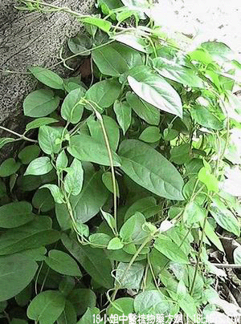

(本文解释权归中药材天地网兄弟站-18小姐中医植物药方网所有,如需转载请注明出处)

别名：鸡屎藤、鸡香藤。
植物名：毛鸡屎藤。
生长环境：本品为藤状灌木。村旁或灌木丛中常缠绕于他树上。
分布：我国除东北、西北外均产之。
入药部分：茎、叶。
采集期：夏、秋。
自采地点：郊野。
性味：性微凉、味甘、有鸡时臭气。
功能：清肝热、化气消积滞，去大肠湿热。
主治、用量和用法：1、湿滞肚痛：用干茎叶1～2两，清水煎服；2、疳积：用生叶2量，擂烂取汁，和米磨成浆，煮为甜糊食；3、眼红热痛：用干茎叶1～2两，清水煎服。
附录：（根）治内伤咳嗽咯血：干用1～2两，猪瘦肉适量，清水煎服。
(本文解释权归中药材天地网兄弟站-18小姐中医植物药方网所有,如需转载请注明出处)